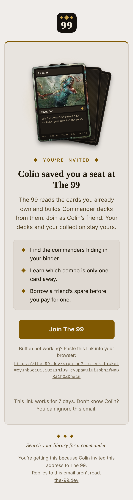
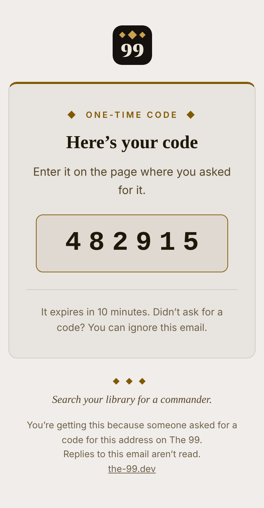
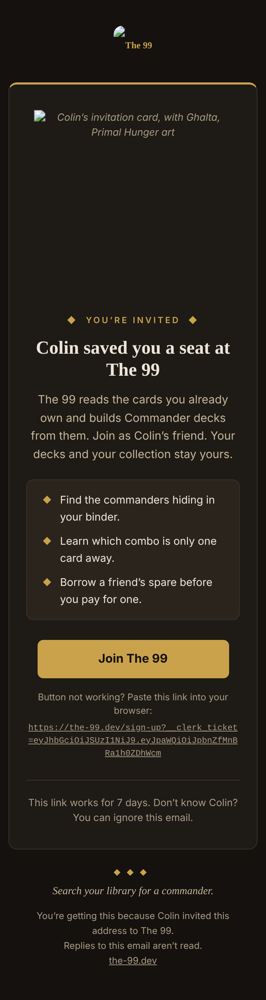

D · light and dark clients, Gmail’s inversion, images off
A dark shell that survives inversion
The shell is dark everywhere and says so (color-scheme: dark). Apple Mail and iOS Mail honor that and leave it. Outlook and Gmail on Android only darken light grounds, and there are none. Gmail on iOS inverts every email, dark ones too: D2 and D3 simulate it (a lightness flip that keeps hue). It reads as a parchment version of the brand, every line passes, and the images (mark tile, card) are never inverted, so they hold the brand. Images off, the tile’s box shows “The 99” in brass and the hand’s box names the card.

D1 · as sent · Apple Mail, Outlook, Gmail Android and web

D2 · Gmail iOS · full invert (simulated)

D3 · code · Gmail iOS (simulated)
The code box goes light grey with a deep brass border, the digits near black.

D4 · images off
The tile’s box shows “The 99”; the hand’s box holds “Colin’s invitation card, with Ghalta, Primal Hunger art”. Every word below still reads. How a client draws a blocked image varies.
Colors, as sent and inverted
| Role | As sent | Gmail iOS ≈ |
|---|---|---|
| Ground | #14110E | #F0EDEA |
| Panel | #1E1A15 | #E8E4DF |
| Line | #3A3229 | #D3CBC2 |
| Code box | #2A241D | #DFD9D2 |
| Heading | #EDE6D8 | #1F180A |
| Body, code label | #C6B79A | #554629 |
| Fine print, footer | #A89B84 | #6F624B |
| Brass (rule, kicker, ◆) | #C9A24B | #805902 |
| Button label | #14110E | #F0EDEA |
The right column is the simulation’s output (CSS invert(1) hue-rotate(180deg)), for checking, not a palette to send: no client takes a second palette from us, and Gmail’s own math differs a little (G5). Inverted, the button label is 5.4:1 on its brass, fine print 4.7:1, footer 5.1:1, body 7.2:1, heading 13.9:1. That is why the footer uses the fine-print color and not faint: faint barely moves when flipped and fell to 3.6:1.
Why not a light shell. It would be the same parchment as D2 in most inboxes and dark only where clients flip it: the newcomer’s first sight would be off-brand for most people instead of a few.